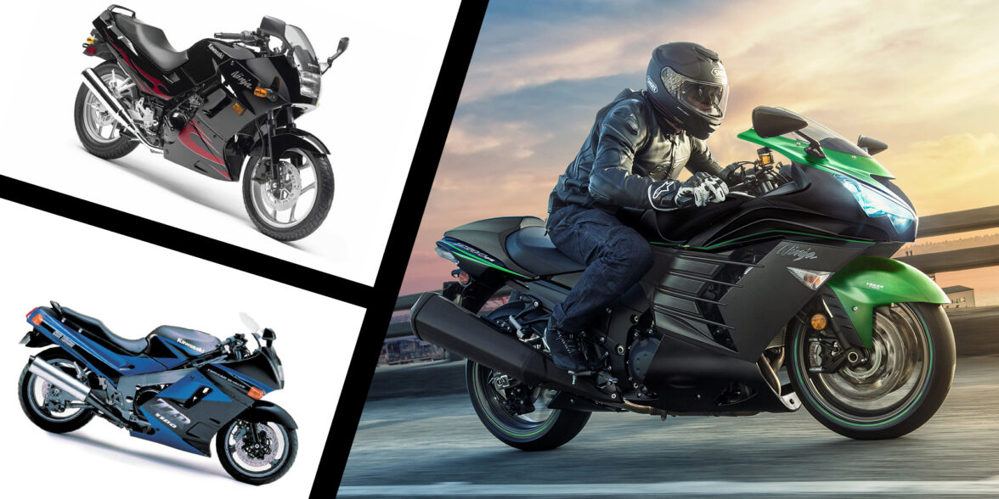
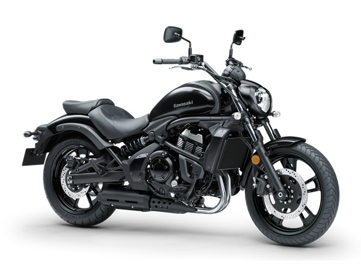
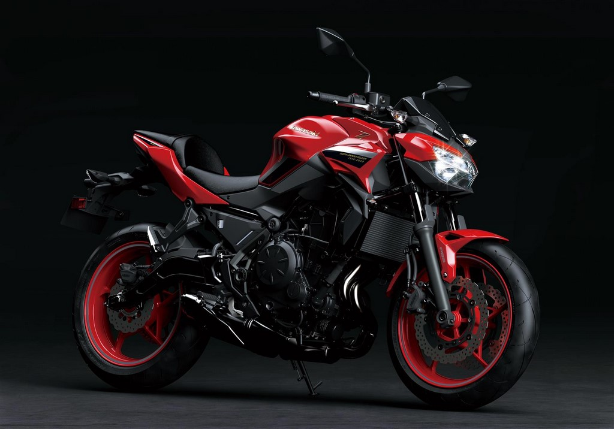
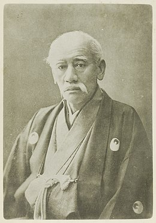

<!DOCTYPE html>
<html lang="en">

<head>
  <meta charset="UTF-8">
  <meta http-equiv="X-UA-Compatible" content="IE=edge">
  <meta name="viewport" content="width=device-width, initial-scale=1.0">
  <meta name="viewport" content="width=device-width, initial-scale=1">
  <link href="https://cdn.jsdelivr.net/npm/bootstrap@5.1.3/dist/css/bootstrap.min.css" rel="stylesheet">
  <script src="https://cdn.jsdelivr.net/npm/bootstrap@5.1.3/dist/js/bootstrap.bundle.min.js"></script>
  <link rel="stylesheet" href="./css/kaw.css">
  <title>Document</title>
</head>

<body>

</body>

</html>

<body>
  <header class="container">
    <div class="row">
      <div class="col-12">
        <h1 class="d-none d-sm-block">Toyota Aygo X</h1>
      </div>
    </div>


    <div id="demo" class="carousel slide" data-bs-ride="carousel">


      <div class="carousel-indicators">
        <button type="button" data-bs-target="#demo" data-bs-slide-to="0" class="active"></button>
        <button type="button" data-bs-target="#demo" data-bs-slide-to="1"></button>
        <button type="button" data-bs-target="#demo" data-bs-slide-to="2"></button>
        <button type="button" data-bs-target="#demo" data-bs-slide-to="3"></button>
      </div>


      <div class="carousel-inner">
        <div class="carousel-item active">
          
          <class="d-block" style="width:75%">
        </div>
        <div class="carousel-item">
          
          <class="d-block" style="width:75%">
        </div>
        <div class="carousel-item">
          
          <class="d-block" style="width:75%">
        </div>
      </div>
    </div>


    <button class="carousel-control-prev" type="button" data-bs-target="#demo" data-bs-slide="prev">
      <span class="carousel-control-prev-icon"></span>
    </button>
    <button class="carousel-control-next" type="button" data-bs-target="#demo" data-bs-slide="next">
      <span class="carousel-control-next-icon"></span>
    </button>
    </div>

    <nav class="navbar navbar-expand-sm bg-blue navbar-light">
      <div class="container-fluid">
        <a class="navbar-brand" href="#">Home</a>
        <button class="navbar-toggler" type="button" data-bs-toggle="collapse" data-bs-target="#collapsibleNavbar">
          <span class="navbar-toggler-icon"></span>
        </button>
        <div class="collapse navbar-collapse" id="collapsibleNavbar">
          <ul class="navbar-nav">
            <li class="nav-item">
              <a class="nav-link" href="#">Bemutatkozás</a>
            </li>

            <li class="nav-item">
              <a class="nav-link" href="#">Utasoknak</a>
            </li>
            <li class="nav-item">
              <a class="nav-link" href="#">Bejelentkezés próbavezetésre</a>
            </li>
            <li class="nav-item">
              <a class="nav-link" href="motoros.html">Motorosoknak</a>
            </li>

          </ul>
          </li>
          </ul>
        </div>
      </div>
    </nav>


  </header>


  <div class="container">
    <div class="row">

      <div class="col-sm-12">

        <h2>Bemutatkozás</h2>
        

        <p>Alapítva a Kawasaki-kikötőt (1878 - 1906)</p>
        <p>
          A társaság a Kawasaki Tsukiji Hajógyárból származik , egy hajógyárból, amelyet Shozo Kawasaki alapított
          1878-ban
          Tokióban . Stratégiája az, hogy a nyugati szabványok szerint hajóépítésbe kezd . Ezt az erőfeszítést erősen
          ösztönzi a Meiji-korszak kormánya , amely történelmi szereplőkre támaszkodva nem tudta modernizálni
          kereskedelmi
          haditengerészetét . 1878 áprilisában ezért 30 000 ¥ kölcsönt kölcsönzött és a Tokió-öbölben lévő kikötő
          területét bérelte a japán államtól . A kezdetek nehézek, a japán hajózási társaságok haboznak feladni a
          vitorlás
          hajókat és hagyományos hajóikat. Az első megrendelés azonban végre megérkezik: a Hokkai Maru , egy 80 tonnás
          kishajó épül. Shozo Kawasaki felkéri a kormányt és az üzleti vezetők ezreit, hogy megünnepeljék az indulását .
          1896-ban a kormány privatizálta az ipar és a felajánlott Shozo Kawasaki a hajógyár Kobe . A vállalkozó azonnal
          megveszi, majd üzleti tevékenységét oda költözteti, a tokiói telephely korlátozott fejlesztési potenciállal
          rendelkezik. A vállalat ezt követően nevét megváltoztatja , így Kawasaki Dockyard lesz , amelynek elnöke
          Matsukata Kōjirō . 1894-ben az első kínai-japán háború ösztönözte a hajók iránti keresletet, és Kawasaki
          megnyitotta vállalatának tőkéjét, amely1896 október 15-énEgy korlátozott cég , Kawasaki Dockyard Co., Ltd.
          Azonnal felépült egy nagy száraz dokk , amelynek felavatása 1902-ben a Kawasakit Japán egyik vezető
          hajóépítőjévé tette. Ugyanakkor a földvásárlások és a műhelyek építése 6000-ről 31 000-re növeli a gyártott
          hajók kapacitását. Míg azonban a vállalat állami támogatást és különféle támogatásokat élvez, az építkezést a
          minőségi anyagok, alkatrészek és eszközök hiánya bünteti.
        </p>

        <p>Kawasaki Shōzō</p>

        <p>
          Született Kagoshima, fia egy kimonó kereskedő , Kawasaki Shozo lett kereskedő évesen 17 Nagasaki , az egyetlen
          hely, Japánban, majd nyitott a Nyugat. Oszakaában 27 éves korában hajózási társaságot alapított , amely
          kudarcot
          vallott, amikor teherhajója viharban elsüllyedt. 1869-ben csatlakozott a fő cukor cég Ryukyu szigetek által
          létrehozott, a szamuráj származó Kagoshima, és 1893-ban keresett cukor és a tengeri utat a RYUKYU kérésére a
          Pénzügyminisztérium . 1894-ben kinevezték a Japan Mail Steam-Powered Shipping Company ügyvezető alelnökévé, és
          sikeresen megnyitott egy tengeri utat a Ryūkyū felé, és cukrot szállított a szigetről Japánba.

          Miután sok tengeri balesetet szenvedett, a Kawasaki jobban bízik a nyugati hajókban, mert azok tágasabbak,
          stabilabbak és gyorsabbak, mint a tipikus japán hajók. Ugyanakkor nagyon érdeklődött a modern hajógyártás
          iránt
          . Ban ben1876. áprilisÁltal támogatott Matsukata Masayoshi a pénzügyminiszter-helyettes, eredetileg az azonos
          tartomány, mint a Kawasaki, megalapította a Kawasaki Tsukiji Hajógyár szárazföldön kölcsönzött a kormánynak
          végig a Sumida-gawa , a Tsukiji Minami-Iizaka-cho (jelenleg Tsukiji 7-chome kerület Chuo-ku Tokióban, amely
          hajóépítőként nagy előrelépés.

          A Kawasaki Heavy Industries és a Kawasaki Steel eredetére vezethető vissza1878. április, amikor Kawasaki Shōzō
          (川 崎 正 蔵) létrehozta Tokióban a Kawasaki Tsukiji Hajógyárat . Tizennyolc évvel később, 1896-ban a cég a
          Kawasaki
          Dockyard Co., Ltd. lett.
        </p>

        <p>Visszavonulás a hazai piac felé (1980 - 1997)</p>

        <p>
          A második olajsokk miatt a jen esett 1980-ban, Japán olaját elsősorban Iránból szerezte . <b>Az exportpiacokon
            visszaélve a vállalat visszaesett a japán belföldi piacra. Az 1980-as évek elejére az exportból származó
            bevételek a vállalat teljes árbevételének 50% -áról 25% -ára nőttek.</b> Ez az átirányítás hosszú távon
          megtérül,
          mivel 1990-ben a Kawasaki visszatért a közel 15 éve nem látott nyereséghez, a nettó nyereség meghaladta a 20
          milliárd jent 1977 óta először. Bár a globális hajózási ágazat Az 1990-es évek közepén bekövetkezett súlyos
          visszaesés következtében a Kawasaki hajóépítési részlege nyereséges tudott maradni. De ez a jövedelmezőség
          továbbra is bizonytalan: a hajógyártás globálisan túlkapacitású, nagyon versenyképes és ki van téve a koreai
          hajógyáraknak. Az 1996-ban elért nyereség csak ciklikus, és a következő évben a hajóépítő ipar tartósan
          deficitbe süllyed, és arra kényszeríti a vállalatot, hogy gondolkodjon a szerkezetátalakításon.

          Néhány piac azonban továbbra is nemzetközi jellegű. 1991-ben a Csatorna-alagút francia oldalán ásó két nagy
          alagútfúró gép ellátása a teljesítmény és a szállítási idő tekintetében technológiai eredmény. 1996-ban a
          vállalat a 8 alagútfúró gépből 3-at a Tokyo Wan Aqua-Line számára szállított , amelyek 14,14 m átmérője
          világrekordot döntött. Bejutni az amerikai piacon, Kawasaki épít gyárat Lincoln , Nebraska : ez az első
          alkalom,
          hogy egy japán járműgyártó elő közvetlenül amerikai földön. Más emblematikus termékek jelennek meg: a Jet Ski
          (a
          kifejezés a Kawasaki tulajdonában van) 1973-ban, egy kompakt gázturbina, amely 1976-ban áramot termel, az
          MBB-Kawasaki BK 117 helikopter 1979-ben, az első japán LNG- hordozó 1981-ben stb.
        </p>

        <a href="https://hu.frwiki.wiki/wiki/Kawasaki_Heavy_Industries">Forrás</a>


        <ul>
          <li>1. Nincs helyi légszennyezés</li>
          <li>2. Nincs finom rezonancia</li>
          <li>3. Nincs zajszennyezés</li>
          <li>4. Akár minden reggel maximális hatótáv</li>
          <li>5. Nyomatékos villanymotor, dinamikus gyorsulás</li>
          <li>5. Nyomatékos villanymotor, dinamikus gyorsulás</li>
          <li>6. Alacsony üzemanyagköltség</li>
          <li>7. Olajimporttól független üzemanyag</li>
          <li>8. Olcsóbb karbantartás</li>
          <li>9. Egyszerűbb hajtáslánc, kevesebb meghibásodás</li>
          <li>10. Ingyenes parkolás</li>
        </ul>


        <p>
          Forrás
        </p>
      </div>
</body>